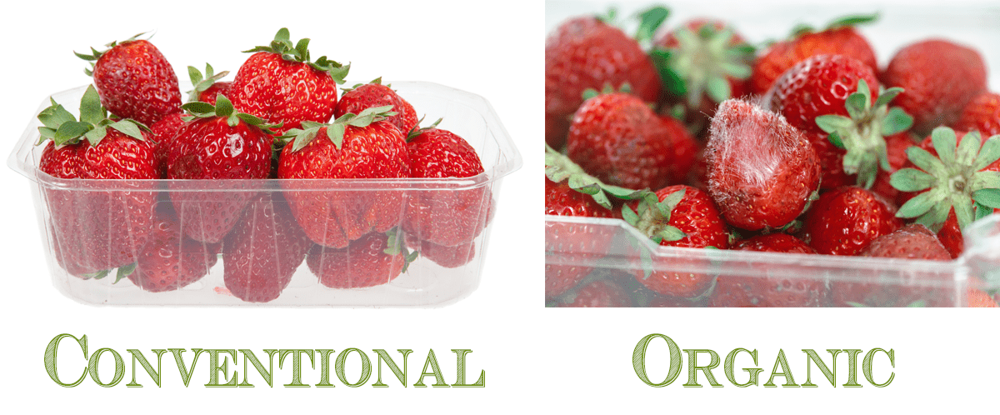
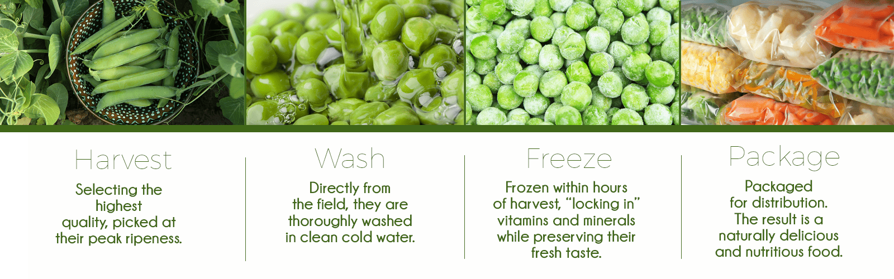

Purchasing Frozen Fruits and Vegetables
Do you ever walk into the grocery store and find yourself mourning the loss of your favorite fresh organic fruits and veggies? Seasons come and go, and so do the edible treasures that they produce. Hungry for strawberries but the only fresh ones in the store are conventionally grown, and the organic ones have mold in the container? In that case, I head for the freezer aisle. More and more these days, you can find organic fruits and veggies in the freezer section of the store.

If I were to walk into a store and see two displays of strawberries next to each other; one being conventionally grown and the other organically grown, I will choose to look at the organic ones. Strawberries (any berry in fact) are on the top Dirty Dozen list. Their test study showed that on one strawberry the sample contained an astounding 22 pesticide residues. BUT, let’s say that the organic berries look shriveled (sign of lost nutrients) or I can detect some mold amongst them, I wouldn’t buy from either display. Mold can be lurking whether you quickly spot it or not and if you do see some, there is usually more hiding.
Before I throw in the towel and bag the idea of going home with some strawberries, I would go to the frozen section of the store to see if they had organic frozen options. Of course, they won’t be as perky looking, and I have to take my recipe into account when making these types of decisions, but this was a great example of how to make wise choices when it comes to the fruits and veggies that we eat.
Before we dive into this topic, let me say that it is always best to buy fruits and vegetables that are ripe and in season. Veering off into the frozen food section is just another option that we have when it comes to enjoying a whole food diet.

Better Nutrients?
Is it possible that frozen fruits and veggies are just as good as fresh? It is, let me point out a few reasons. A bonus of eating frozen fruits and vegetables is that fresh produce often spends days or even weeks in transit from a farm to a store then to your refrigerator. Because of this, produce is often picked before it’s fully ripened, cutting short the time these vegetables and fruits need to fully mature and develop all the nutritional goodies they have to offer. If you have a garden and can pick them straight from the garden, ALL the better as they will be bursting with nutrients.
Frozen produce is usually picked at the height of their ripeness when they’re bursting with vitamins and minerals. From there they are then flash-frozen, locking in nutrients at their finest hour. Think of it this way, freezing, in essence, is nature’s pause button. (1, 2, 3)
Save Money
- If you are on a budget (tight or not) using or freezing foods can help reduce costs.
- Buy your favorite fruits and vegetables in the frozen form, no matter the season or freeze your own.
- Frozen (out of season) fruits and vegetables are usually cheaper than fresh.
- Single-serve pouches make it easy to thaw what you need, reducing spoilage and food waste to save money.
Dress warm…you will have some label reading to do! (that’s me up above haha)
How to Shop for Frozen Foods
The frozen food section in your supermarket can be packed with nutrient-positive foods. You will want to use the same principles as though you were purchasing fresh.
- Look for organic.
- Read the label. It’s not uncommon for some manufacturers to add other ingredients to your veggies. Look for brands that contain only one ingredient.
- Choose packages marked with a USDA “U.S. Fancy” shield, which designates produce of the best size, shape, and color; vegetables of this standard also tend to be more nutrient-rich than the lower grades “U.S. No. 1” or “U.S. No. 2.”
- Make sure the vegetables haven’t frozen into a lump, this is a sign that they have been thawed and refrozen.
Storing Frozen Fruits & Veggies
- Store your frozen goodies in the freezer cavity, not in the door. Foods that are kept in the freezer door are more susceptible to freezer burn, especially if you open and close your freezer often.
- When you place foods in freezer bags, seal and lay them flat in your freezer until the contents harden entirely, making them easy to stack.
How to Thaw Frozen Fruits & Veggies
- Place the package in a resealable plastic bag, and submerge in cold water until thawed. Avoid warm or hot water. Gently press the packaging with your fingers and thumbs to feel for the change in the texture of the vegetables from frozen solid to thawed.
- Open the packaging and place the vegetables in a colander before using to remove any melted water.
- To prevent the growth of bacteria, avoid thawing produce at room temperature.
- If you plan to cook the veggies, skip the thawing process altogether and go straight to the cooking step to avoid rubbery, mushy, or slimy results.
- If you have frozen greens, you can break off a section of them and toss them into the blender to add to your smoothies.
Using Frozen Fruits & Veggies
- Frozen foods can start to lose nutrients the longer it sits in the freezer so be sure to rotate your purchases and use them within three months.
- If you plan on cooking some of your frozen veggies (even if using fresh), use cooking methods that lock in most of the nutrients. Steaming or stir-frying are the two top choices.
- Avoid boiling vegetables because the nutrients leach out into the water and get drained away. If using in soups, you will be ok since you will be enjoying the broth as well.
- Frozen fruits and some veggies are perfect for smoothies. By adding them frozen, it will help to thicken and chill your creative masterpiece.
- Veggies can have a mushy texture after defrosting because ice crystals damage the vegetable cell walls. Keep this in mind when it comes to adding them to recipes.
I hope I have put your mind at ease and have added another option to your grocery shopping. As I always say, “Do your best with what you have before you.”
© AmieSue.com